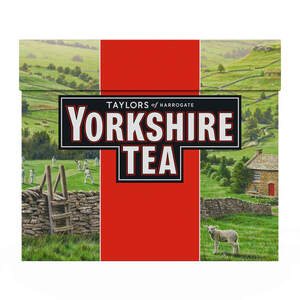
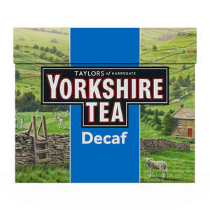
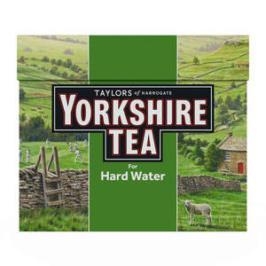

Trade Mark Journal No.2026/008 20 February 2026
UK00004295177 14 November 2025 (18,21,24,25,28,30)
Mark 1

Mark 2

Mark 3

- Class 18
- Bags; tote bags; shopping bags; duffel bags; sports bags; handbags; umbrellas; wallets; purses.
- Class 21
- Household or kitchen utensils and containers; glassware, porcelain and earthenware not included in other classes; pots; tea pots; tea caddies; tea infusers; tea services; tea strainers; crockery; glassware; cups and saucers; beakers; mugs; drinking flasks; kettles; urns; oven gloves and mitts; drinks mats being coasters.
- Class 24
- Tea towels; household textiles; table linen; towels; textile coasters; wall hangings of textile; household linens; tea towels; table cloths; table runners; napkins.
- Class 25
- Clothing; footwear; headgear; t-shirts; caps; hats; jumpers; sweatshirts.
- Class 28
- Games; toys; playthings; model cars; toy figurines; toy cars.
- Class 30
- Coffee; tea; cocoa and substitutes therefor; hot chocolate; artificial coffee; fresh coffee; coffee beans; roasted coffee; ground coffee; instant coffee; decaffeinated coffee; freeze dried coffee; coffee in ready to drink form; coffee pods; coffee bags; coffee capsules; flavoured coffee; coffee flavoured with liqueurs; coffee flavoured with spirits; iced coffee; coffee extracts; coffee essences; coffee oils; coffee flavourings; mixtures of coffee and chicory; chicory and chicory mixtures, all for use as substitutes for coffee; non-medicated infusion products for making hot beverages; coffee concentrates; coffee based beverages; tea; tea bags; loose tea; tea leaves; tea essences; tea extracts; iced tea; tea based beverages; tea substitutes; fruit extracts and herbal extracts for making hot beverages; flavourings of tea; tea pods; bakery products; bread; cakes; biscuits; confectionery; chocolate; confectionery; chocolate confectionery; savoury cakes; savoury biscuits; savoury pastries.
Bettys & Taylors Group Limited
Representative: HGF Limited